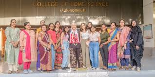

|
|
|
Students at 2023 Climate Conference Updated on: November 30, 2023
Austin College students travel to Dubai for 2023 Climate Conference
COP UAE 2023SHERMAN, TX – The 2023 United Nations Climate Conference (COP28) is drawing delegates from around the world from November 28–December 13, and Austin College has its own delegation attending as official observers in the host city of Dubai, United Arab Emirates.
Eight students and two faculty are traveling to the event, with half the group in Dubai the first week of the conference, and the second group arriving for week two. While at COP28, the students will present live reports from Dubai via Zoom on Friday, December 1, in the Wright Campus Center during the noon hour.
The annual conference brings nations together to take action toward achieving the world’s collective climate goals as prescribed under the 2015 Paris Climate Agreement. The Austin College group will have access to watch the COP28 “Blue Zone” sessions, where heads of state and environmental ministers negotiate policy concerning various climate issues. Students also can engage through the “Green Zone” where lobbyists, activists and exhibitors will be pitching their interests. |
 |
Annual Service of Lessons and Carols Holiday Season Opens with Service of Lessons and Carols
Holiday Tree in Wynne ChapelSHERMAN, TEXAS — Austin College will ring in the 2023 holiday season with its Service of Lessons and Carols. The community is invited to join students, faculty, and staff in the Clifford J. Grum Sanctuary of Wynne Chapel on Thursday, November 30, at 5 p.m. The service will be streamed live on Facebook and YouTube at 5 p.m. CST.
The annual service, led by Chaplain John Williams ’84, includes Hebrew and Christian scriptures, carols, anthems, a candle-lighting ceremony, and performances by Austin College’s A Cappella Choir and Chamber Orchestra. Austin College President Steven O’Day and alumni Shane Webb ’07 and Lillian Pappas ’22 will serve as readers as part of the College’s 175th year celebrations.
Student readers include Kiara Bobb ’24, Lee Campbell ’25, Thomas Jolin ’25, and Erica Moyo ’27.
After the service, all are invited to enjoy cocoa and cookies at the tree lighting on Windsor Mall.Austin College, a private national liberal arts college located north of Dallas in Sherman, Texas, has earned a reputation for excellence in academic preparation, pre-professional foundations, committed faculty, and hands-on, adventurous learning opportunities. One of 44 schools profiled in Loren Pope’s influential book Colleges That Change Lives, Austin College boasts a welcoming community that embraces diversity and individuality, with more than 50 percent of students identifying as persons of color. The residential student body of approximately 1,300 students and an expert faculty of more than 100 educators allow a 13:1 student-faculty ratio and personalized attention. Related by covenant to the Presbyterian Church (USA), Austin College cultivates an inclusive atmosphere that supports students’ faith journeys regardless of religious tradition. The College, founded in 1849, is the oldest institution of higher education in Texas operating under original name and charter. |
| |
 |
|
|
| |
The Scenario in India A view from the top will show the tremendous progress India has made in the education field, even to the extent of digitisation of classrooms and enabling continuity of learning through online classes. The country has numerous reputed schools, universities and world renowned IITs & IIMs. But a closer look will reveal that not all is as rosy as it seems. There exists a huge disparity in accessibility to education, making it a privilege for those who can afford.
The literacy rate in India is approximately 79.1% according to the 2022 census that tracked data across 28 states. The most literate state is Kerala followed by Bihar with the lowest rank. The most literate union territory is Lakshadweep with literacy of 91.8%.
The Annual Status of Education Report (ASER) is a survey summarising the average number of students who enrol in schools across all ages. According to the ASER, Enrolment in private schools for children aged 6 to 14 has decreased from 32.5% in 2018 to 24.4 percent in 2021. This shift is seen across all grade levels and among both boys and girls. This decrease is majorly due to the pandemic and an increase in unemployment levels in the country. The report also mentioned that in 2018, 1.4% of boys aged 7-10 and 2.9% of boys aged 11-14 were not in school; in 2020 and 2021, those proportions increased to 4.7% and 4.1%, respectively. For girls, the proportion has remained nearly constant in the older age groups, but there has been a significant increase in the younger age groups. In 2018, 1.4% of girls aged 7 to 10 did not attend school, while 3.6% of girls aged 11 to 14 did not attend. In 2020 and 2021, the proportions for both groups increased to 4.1% and 3.9%, respectively.
According to SRI-IMRB surveys 2009 and 2014; in 2014, an estimated 6.1 million children were out of school, down from 13.46 million in 2006. Out of every 100 students, 29% drop out before completing the full cycle of elementary education, and these are often the most marginalised children. According to the All India Survey for Higher Education (AISHE), the Gross Enrolment Ratio (GER) is higher by 3% in 2019-20 as compared to 2016-17. Yet, we have a long way to go not only regarding increasing this number, but also to help more students enrol and complete their education. This is not only for the records, but to empower the youth along with it. According to a 2020 survey, India ranks 33rd globally which is a progress from its earlier rankings of 35th in 2019 and 40th in 2018 (https://www.nimt.ac.in/blog/where-does-the-indian-education-system-stand-on-a-world-scale#:~:text=India%20stands%20at%2033rd%20rank,2019%20it%20stood%20at%2035th).
Though there is a long way to go to be among the top 10 countries, but by and large, India has made progress as a result of its various education schemes and policies. Below are mentions of some the schemes:
Samagra Shiksha, Pradhan Mantri Poshan Shakti Nirman (PM POSHAN), National Means-cum-Merit Scholarship Scheme (NMMSS), and Padhna Likhna Abhiyan are some of the schemes under School Education & Literacy (https://dsel.education.gov.in/about-us)
Rashtriya Ucchatar Shiksha Abhiyan (RUSA), National Research Professorship (NRP), New Initiatives of XI Plan, Schemes Implemented Through Autonomous Organisations, and Community Colleges are some of the major schemes under University & Higher Education (https://www.education.gov.in/en/schemes-1)
Apart from this, the Government of India also supports students through various scholarship programmes and loan schemes.
To aid the efforts of the government, several non-governmental organisations work closely with underprivileged communities to help their children receive education and one such education NGO is Vidya Chetana. Many schools, colleges, universities as well as CSR wings of corporates support students by providing scholarships. In addition, awareness programmes are conducted to encourage people to support underprivileged children. |
Reasons why education is a distant dream for many It is a well-accepted fact that children are the future of a nation, and to actually harness the potential of it, quality education is a must. It empowers children to be independent, resourceful and contributing members of society. But there are many factors that deprive children of this basic fundamental right, creating a divide - between rural and urban, and between the privileged and the underprivileged sections of the society.
Poverty: Vidya Chetana, an initiative of Youth for Seva The Annual Status of Education Report (ASER) is a survey summarising the average number of students who enrol in schools across all ages. According to the ASER, Enrolment in private schools for children aged 6 to 14 has decreased from 32.5% in 2018 to 24.4 percent in 2021. This shift is seen across all grade levels and among both boys and girls. This decrease is majorly due to the pandemic and an increase in unemployment levels in the country. The report also mentioned that in 2018, 1.4% of boys aged 7-10 and 2.9% of boys aged 11-14 were not in school; in 2020 and 2021, those proportions increased to 4.7% and 4.1%, respectively. For girls, the proportion has remained nearly constant in the older age groups, but there has been a significant increase in the younger age groups. In 2018, 1.4% of girls aged 7 to 10 did not attend school, while 3.6% of girls aged 11 to 14 did not attend. In 2020 and 2021, the proportions for both groups increased to 4.1% and 3.9%, respectively.
According to SRI-IMRB surveys 2009 and 2014; in 2014, an estimated 6.1 million children were out of school, down from 13.46 million in 2006. Out of every 100 students, 29% drop out before completing the full cycle of elementary education, and these are often the most marginalised children. According to the All India Survey for Higher Education (AISHE), the Gross Enrolment Ratio (GER) is higher by 3% in 2019-20 as compared to 2016-17. Yet, we have a long way to go not only regarding increasing this number, but also to help more students enrol and complete their education. This is not only for the records, but to empower the youth along with it. is an education NGO that has been working to make education available and accessible to underprivileged students since 2009. This education NGO provides financial aid in the form of scholarship and supports meritorious students from socio-economically weaker sections. Alongside this education NGO also provides career guidance, mentorship, 21st century skills training as well as employability readiness training to equip and prepare their beneficiaries for the real world.
Impact of Vidya Chetana
So far, Vidya Chetana has supported 5,775 students from across 10 states in India. The beneficiaries of this education NGO are students from socio-economically underprivileged sections, specially-abled, and those who have lost their parent/s during COVID-19 pandemic.
The scholarships provided by this education NGO are for supporting PUC students (Intermediate students), degree students, engineering students, and medical students. This is one of the major reasons that blocks children from receiving education, making it a far-fetched dream for families who do not even know if they will get their next meal. Such situations compel them to send all family members, big and small, to earn for a square meal. This keeps children away from schooling and they remain entangled in the never-ending cycle of poverty and illiteracy.
Low socio-economic status: The sad reality is that the socio-economic status of children often gets in the way while deciding the school or college. Even if parents want to send their children to good schools and colleges, concerns like affordability and bullying blocks their desire.
Inadequate funds: Financial constraints frequently force students to withdraw from school and college, and in the worst-case scenario, prevent them from even enrolling. This makes education inaccessible and leads to discontinuation, leaving children unqualified to make further progress, be it to the next level of studies or in acquiring a job.
Imbalance in quality and quantity: The majority of India's 35 million school-age children come from low-income families. This large population of children is also caught up in the existing urban-rural divide. While trying to meet demand, education quality has suffered, with half of Grade 5 students having learning skills equivalent to Grade 2. |
|
Impact of Vidya Chetana Impact of Vidya Chetana
of boys aged 7-10 and 2.9% of boys aged 11-14 were not in school; in 2020 and 2021, those proportions increased to 4.7% and 4.1%, respectively. For girls, the proportion has remained nearly constant in the older age groups, but there has been a significant increase in the younger age groups. In 2018, 1.4% of girls aged 7 to 10 did not attend school, while 3.6% of girls aged 11 to 14 did not attend. In 2020 and 2021, the proportions for both groups increased to 4.1% and 3.9%, respectively.Vidya Chetana, an initiative of Youth for Seva is an education NGO that has been working to make education available and accessible to underprivileged students since 2009. This education NGO provides financial aid in the form of scholarship and supports meritorious students from socio-economically weaker sections. Alongside this education NGO also provides career guidance, mentorship, 21st century skills training as well as employability readiness training to equip and prepare their beneficiaries for the real world. |
Mission Education by Vidya Chetana The literacy rate in India is approximately 79.1% according to the 2022 census that tracked data across 28 states. The most literate state is Kerala followed by Bihar with the lowest rank. The most literate union territory is Lakshadweep with literacy of 91.8%. The Annual Status of Education Report (ASER) is a survey summarising the average number of students who enrol in schools across all ages. According to the ASER, Enrolment in private schools for children aged 6 to 14 has decreased from 32.5% in 2018 to 24.4 percent in 2021. This shift is seen across all grade levels and among both boys and girls. This decrease is majorly due to the pandemic and an increase in unemployment levels in the country. The report also mentioned that in 2018, 1.4% of boys aged 7-10 and 2.9% of boys aged 11-14 were not in school; in 2020 and 2021, those proportions increased to 4.7% and 4.1%, respectively. For girls, the proportion has remained nearly constant In 2018, 1.4% of girls aged 7 to 10 did not attend school, while 3.6% of girls aged 11 to 14 did not attend. In 2020 and 2021, the proportions for both groups increased to 4.1% and 3.9%, respectively.Vidya Chetana, an initiative of Youth for Seva is an education NGO that has been working to make education available and accessible to underprivileged students since 2009. This education NGO provides financial aid in the form of scholarship and supports meritorious students from socio-economically weaker sections. t is a well-accepted fact that children are the future of a nation, and to actually harness the potential of it, quality education is a must. It empowers children to be independent, resourceful and contributing members of society. But there are many factors that deprive children of this basic fundamental right, creating a divide - between rural and urban, and between the privileged and the underprivileged sections of the so |
| This Site Created and Design by Raj ... |